# A tibble: 6 × 5
country coverage inequality pop region
<chr> <dbl> <dbl> <dbl> <chr>
1 Angola -0.14 0.1 30.2 Sub-Saharan Africa
2 Papua New Guinea -0.35 0.08 16.5 Southeast Asia, East Asia and Ocea…
3 Pakistan 0.12 0.05 82.5 South Asia
4 Chad 0.14 0.01 27.5 Sub-Saharan Africa
5 Ethiopia 0.32 0.005 55 Sub-Saharan Africa
6 Kenya 0.07 -0.06 30.2 Sub-Saharan Africa Principles of data visualisation and plotting in R
Introduction
What to expect
How to make an informative visual representation of data and/or results
- Part I: process of graph creation
- Part II: principles of graph interpretation
Note
Graph = diagram = chart = figure = picture
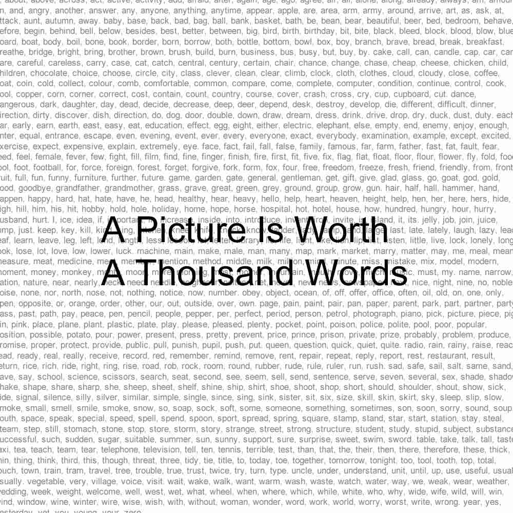
But it takes
- knowledge of graphics principles
- effort; trial and error
- time
to make a “good” one
Who created this graph?
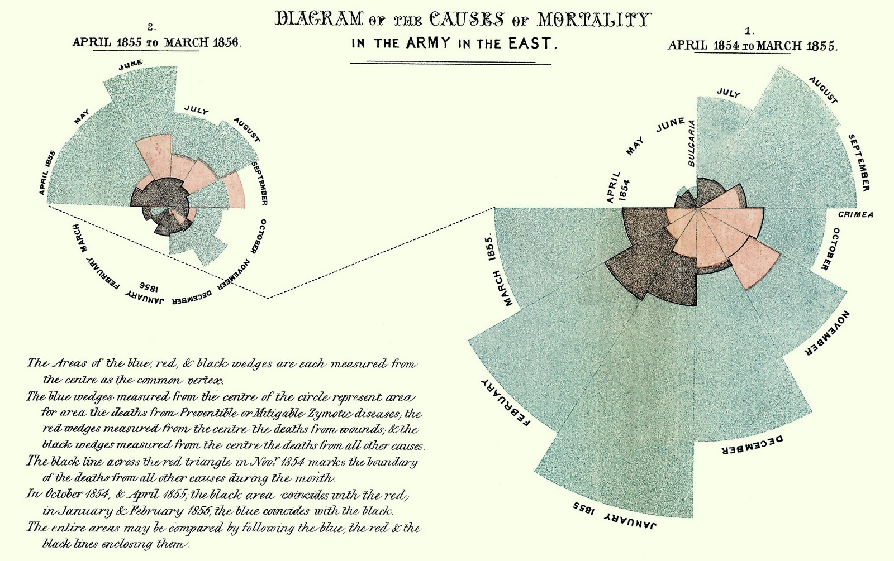
Answer: Florence Nightingale
Rose plot to convince UK authorities of importance of hygiene
Example of informative graph
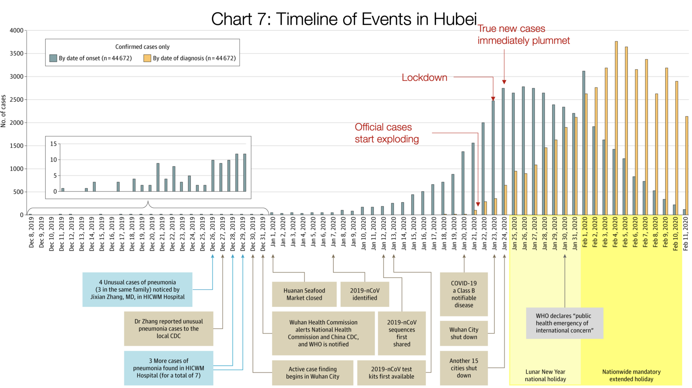
Example of noninformative graph
Hinrichsen: risk factors for hepatitis G infection in haemodialysis patients
Do we need a graph?
Are there enough data points to merit a plot?
- Depends on mode of presentation: conference lecture (time limit), article
If we use a graph, is this one the most truthful and informative?
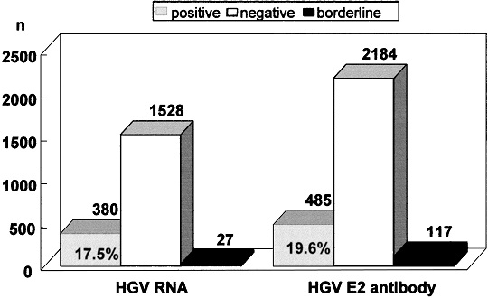
Graph versus table
Cohort study on 1187 HIV infected persons in The Gambia


Pattern discovery (fake results)

Points to consider
Why do we make a graph? (purpose)
We want to explore and inspect our data or results
Present data or results, often with a message, to others
- Where do we show the graph: research paper, conference, website
- Who is the audience. Level of background knowledge
What do we want to show (data)
Graph: visual representation of information (“encoding”)
mapping from data/results to figure
The Grammar of Graphics
The origin
The author
- Leland Wilkinson, The Grammar of Graphics, Springer 2005
- Author of SYSTAT; 1995: sold to SPSS
- 1994 - 2007: Senior VP, SPSS
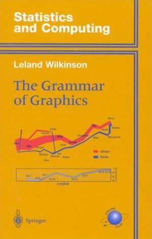
What is a grammar?
- Defines components of a sentence (verb, noun, …) and rules how to combine them
- Such a sentence does not necessarily have to make sense
- “The lab is flying menacingly” (Subject + Conjugate + Verb + Adverb)
 E.g. this is one grammar rule of English
E.g. this is one grammar rule of English
What is a grammar?
- Graphics grammar:
- Defines components of a figure and rules how to combine them
- Does not advise on the best choice of scale (linear, logarithmic), color or line type; one can create noninformative graphs
Grammar helps expressing ideas or information in a clear and coherent way
Grammar of a graph
- A graph maps information (data) to aesthetic attributes of geometric objects
- Aesthetic attributes are the “role” of variables in plot: location (often along x-axis and y-axis), colour, size, shape
- Geometric objects are the shapes of the data you’re visualising, e.g. points, lines, bars
Scatter plot
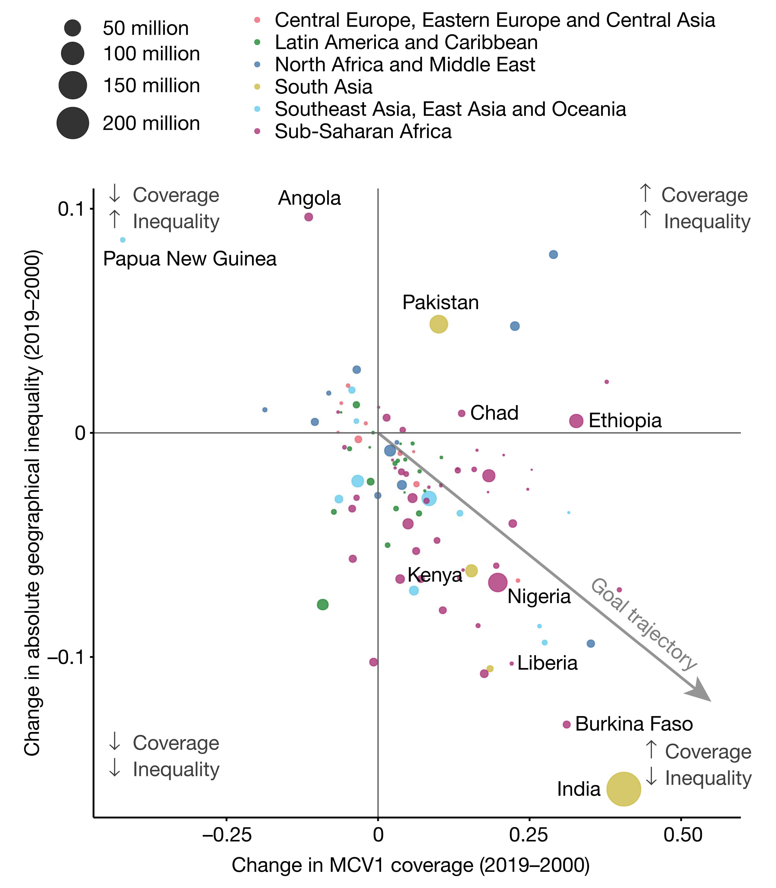
“Mapping routine measles vaccination in low-and middle-income countries.” Nature 589, no. 7842 (2021): 415-419. (IF 2023 = 50.5).
How do you read this plot?
Scatter plot
What information would you need to map each point correctly onto this plot?
- Country name
- Position
- Size
- Color
Data
label (country) |
x (coverage) |
y (inequality) |
size (population) |
color (region) |
|---|---|---|---|---|
| Nigeria | 0.20 | -0.07 | 220M | Sub-Saharan Africa |
Data can be downloaded here: nature_plot.xlsx
Scatter plot
Let’s draw this “by hand”
Draw this “by hand”
- Draw the axes
- Draw the data points
- Adjust point sizes
- Colour-code the regions
- Add key country labels
We draw this by using…
ggplot2
Use the Grammar of Graphics to create elegant data visualisations
code.R
library(ggplot2)Draw the axes
code.R
# df <- ...
ggplot(
data = df,
mapping = aes(x = coverage, y = inequality)
)➡ The x and y aesthetics determine which variable is drawn on each axis.
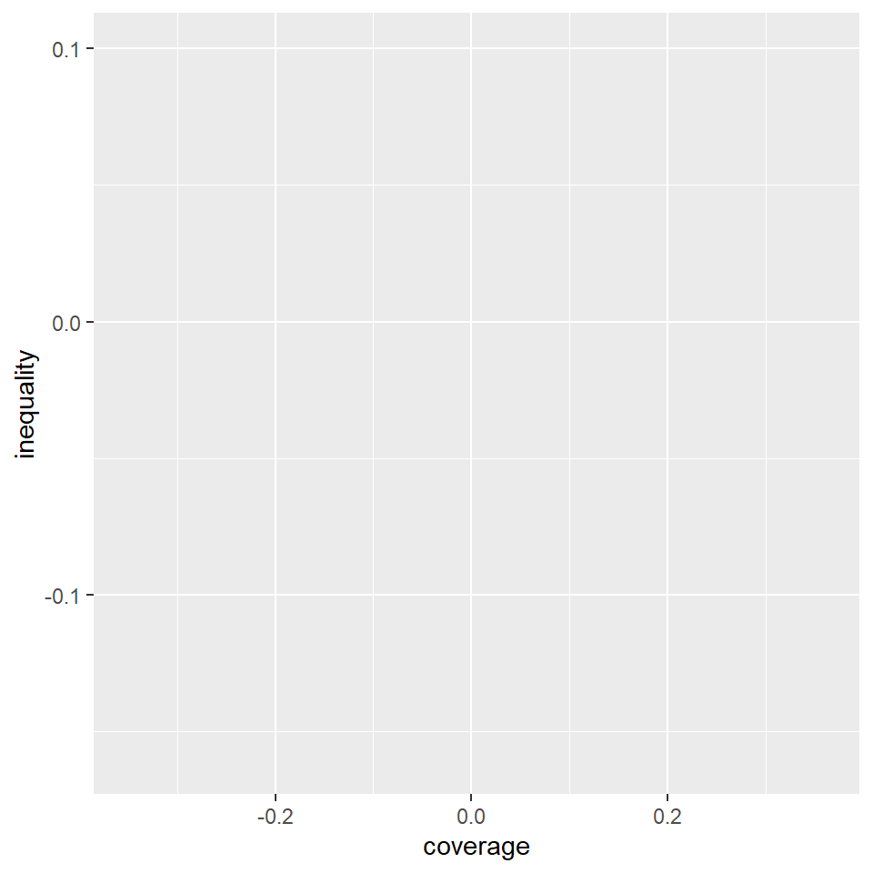
Draw the data points
Changing the plot orientation
Adjust point sizes
Colour-code the regions
Add key country labels

Compare with the original figure
Original figure
Ours (so far)
Warning: Removed 50 rows containing missing values or values outside the scale range
(`geom_text()`).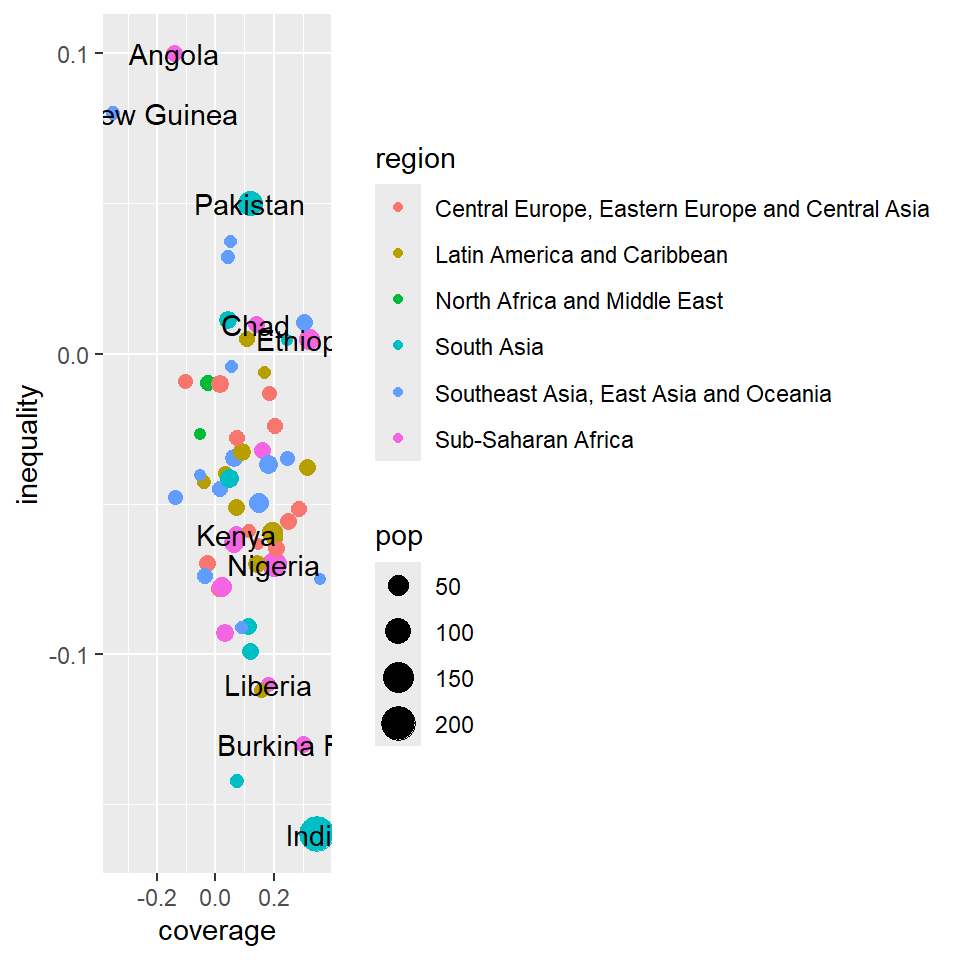
Grammar of a graph
- Mapping from information (data) to aesthetic attributes of geometric objects
- Aesthetic attributes are the “role” of variables in plot: location (often along x-axis and y-axis), colour, size, shape
- Geometric objects are what you see on the plot (points, lines, bars)
- Scales defines how the information (data) is mapped to aesthetic attributes work
- Guides defines how scales are represented
Scales and guides
- Scales controls the limits and ticks of the x-axis and y-axis
- Guides can roughly be understood as similar to figure legends, it’s where we read data values from the graph
Which components are controlled by scales? And which are controlled by guides?
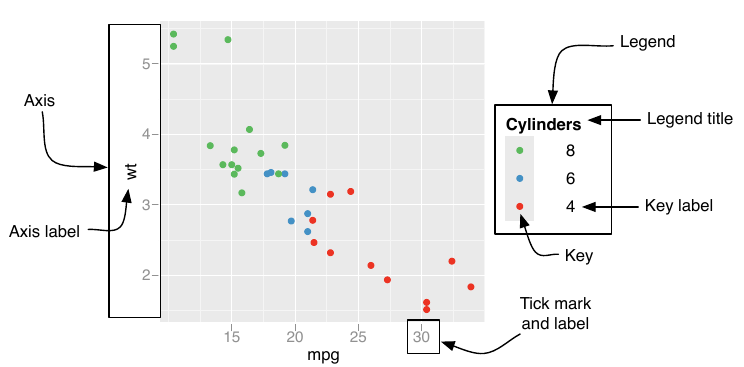
Scales and guides
- Scales can also include statistical transformation(s)!
Scales: statistical transformation
Value transformation (e.g. linear scale -> logarithm scale)
Each bar in a histogram can be a “sum” or a “percentage/frequency”, depending on the (optional) statistical transformation applied
A Least Square Regression line can be fitted before plotting, this also counts as a statistical transformation
Scales: statistical transformation
Important
Statistical transformation(s) on the scales do not change the data, just the scale we use to observe it
Linear scale on the x-axis
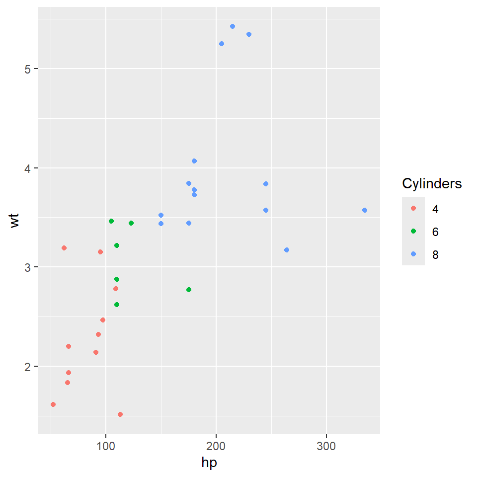
Log-10-scale on the x-axis
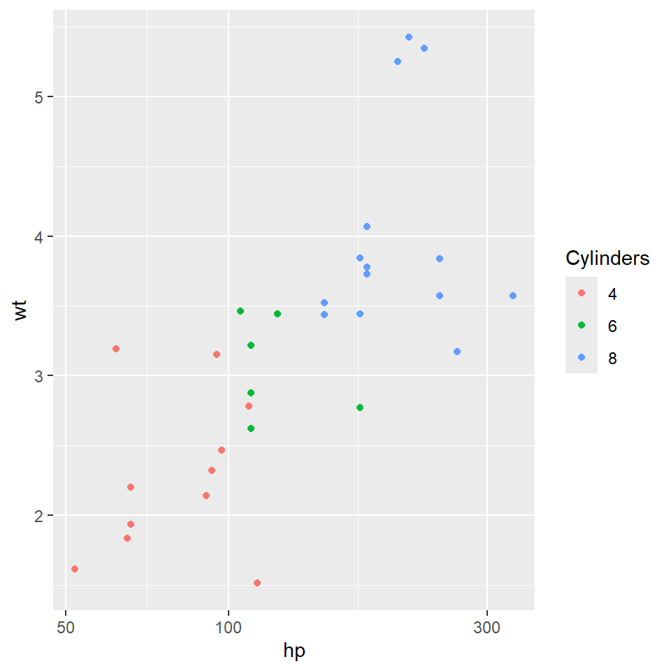
Scales
- Scales controls the limits and ticks of the x-axis and y-axis
- Guides can roughly be understood as similar to figure legends
- Scales can also include statistical transformation(s)
- Some other types of scales: colour, point shape, line type, point size
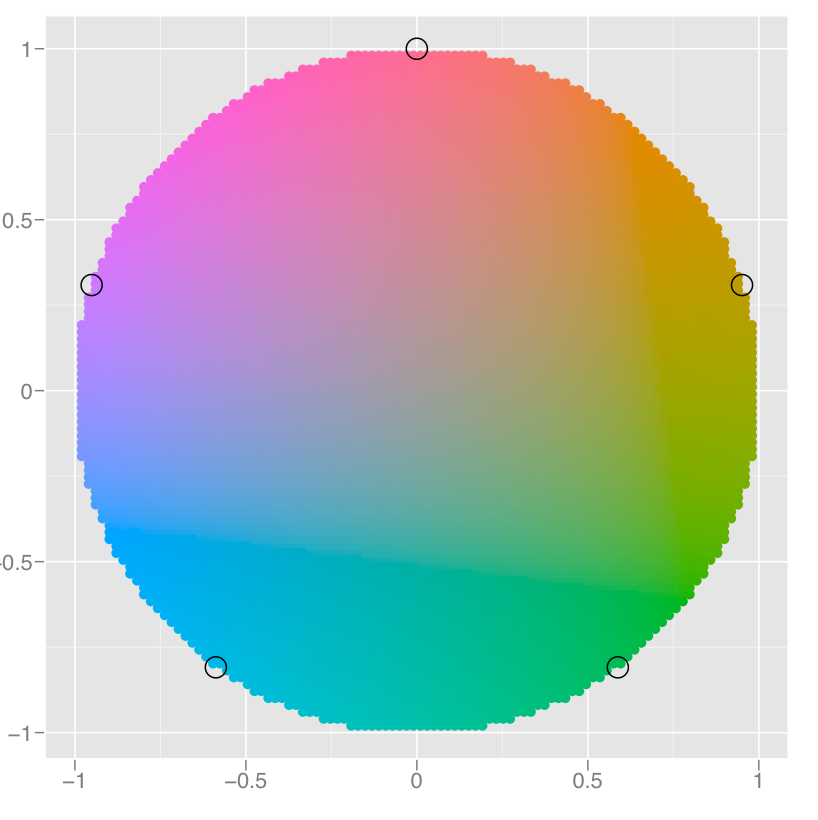
Refine the plot: the colour scale
code.R
ggplot(data = df, mapping = aes(x = coverage, y = inequality)) +
geom_point(mapping = aes(size = pop, color = region)) +
geom_text(mapping = aes(label = country))Warning: Removed 50 rows containing missing values or values outside the scale range
(`geom_text()`).
Refine the plot: the colour scale
code.R
Use the built-in Viridis color palette
Warning: Removed 50 rows containing missing values or values outside the scale range
(`geom_text()`).
Refine the plot: the colour scale
code.R
Tip
You can also use scale_color_viridis_d(), which is a shorthand for the scale layer we used on the previous slide
Breakdown:
scalemeans we are adding a scale layer_colormeans this scale is for thecoloraesthetic (checking youraes()!)_viridisdefines the color palette_d()stands for “discrete”, so this scale is for a discrete variable
Warning: Removed 50 rows containing missing values or values outside the scale range
(`geom_text()`).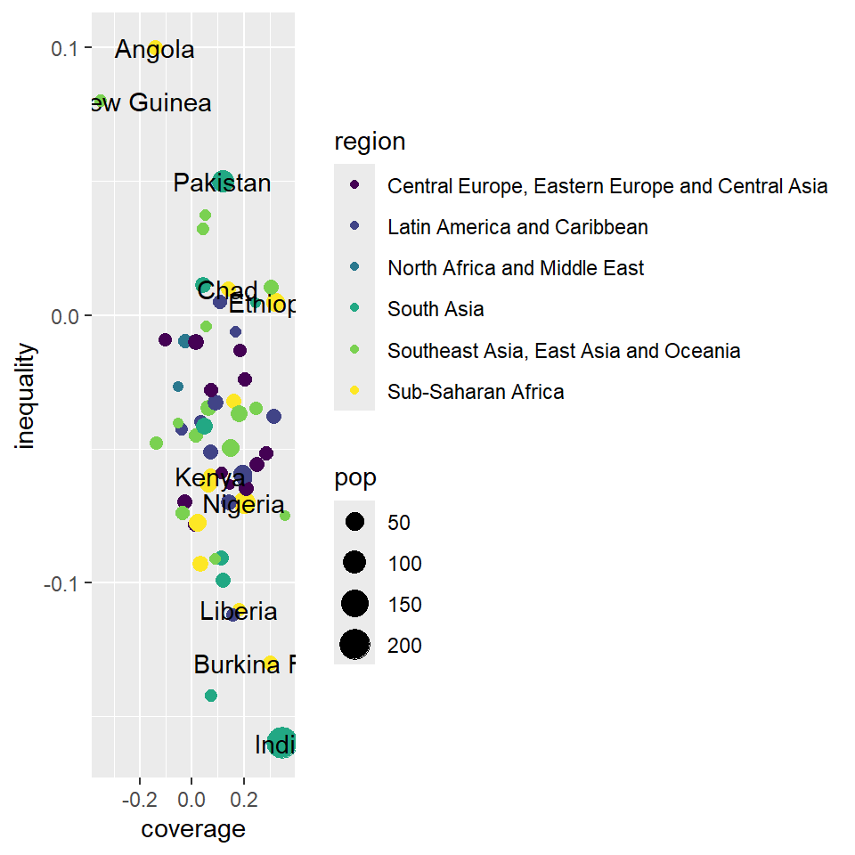
Refine the plot: the colour scale
code.R
my_pallete <- c(
"Central Europe, Eastern Europe and Central Asia" = "#fa8495",
"Latin America and Caribbean" = "#4ca258",
"North Africa and Middle East" = "#6493bb",
"South Asia" = "#d7c968",
"Southeast Asia, East Asia and Oceania" = "#7dd8f3",
"Sub-Saharan Africa" = "#bc5c91"
)
ggplot(data = df, mapping = aes(x = coverage, y = inequality)) +
geom_point(mapping = aes(size = pop, color = region)) +
geom_text(mapping = aes(label = country)) +
scale_color_manual(values = my_pallete)You can define and use your own custom color palette!
Warning: Removed 50 rows containing missing values or values outside the scale range
(`geom_text()`).
Refine the plot: the point-size scale
code.R
my_pallete <- c(
"Central Europe, Eastern Europe and Central Asia" = "#fa8495",
"Latin America and Caribbean" = "#4ca258",
"North Africa and Middle East" = "#6493bb",
"South Asia" = "#d7c968",
"Southeast Asia, East Asia and Oceania" = "#7dd8f3",
"Sub-Saharan Africa" = "#bc5c91"
)
ggplot(data = df, mapping = aes(x = coverage, y = inequality)) +
geom_point(mapping = aes(size = pop, color = region)) +
geom_text(mapping = aes(label = country)) +
scale_color_manual(values = my_pallete, guide = guide_legend(order = 2)) +
scale_size_continuous(
breaks = c(50, 100, 150, 200),
labels = c("50 million", "100 million", "150 million", "200 million"),
range = c(0, 8),
guide = guide_legend(order = 1)
)Warning: Removed 50 rows containing missing values or values outside the scale range
(`geom_text()`).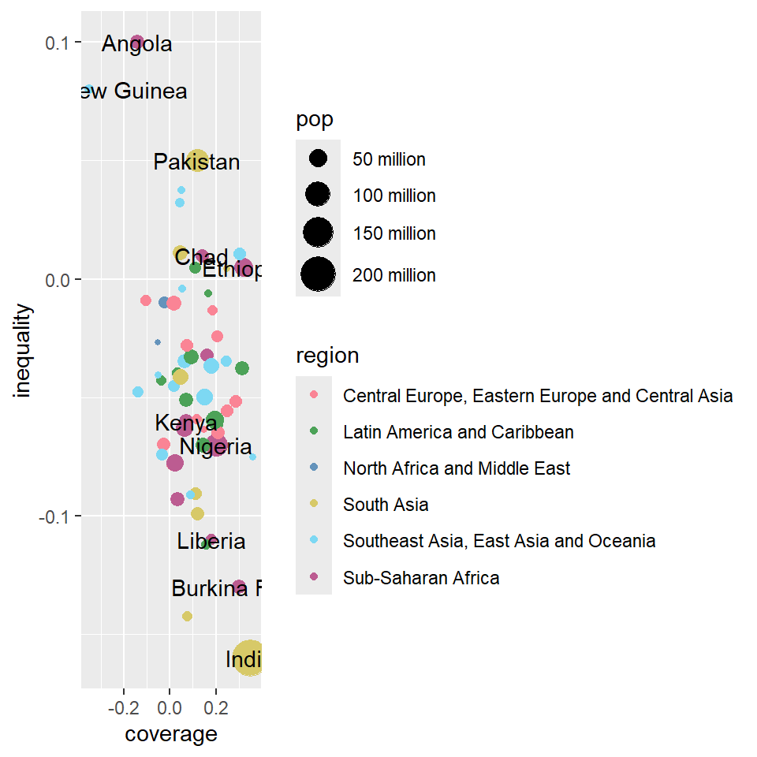
Refine the plot: the axes
code.R
my_pallete <- c(
"Central Europe, Eastern Europe and Central Asia" = "#fa8495",
"Latin America and Caribbean" = "#4ca258",
"North Africa and Middle East" = "#6493bb",
"South Asia" = "#d7c968",
"Southeast Asia, East Asia and Oceania" = "#7dd8f3",
"Sub-Saharan Africa" = "#bc5c91"
)
ggplot(data = df, mapping = aes(x = coverage, y = inequality)) +
geom_point(mapping = aes(size = pop, color = region)) +
geom_text(mapping = aes(label = country)) +
scale_color_manual(values = my_pallete, guide = guide_legend(order = 2)) +
scale_size_continuous(
breaks = c(50, 100, 150, 200),
labels = c("50 million", "100 million", "150 million", "200 million"),
range = c(0, 8),
guide = guide_legend(order = 1)
) +
scale_x_continuous(
breaks = c(-0.25, 0, 0.25, 0.5),
limits = c(-0.4, 0.55)
) +
scale_y_continuous(
breaks = c(-0.1, 0, 0.1),
limits = c(-0.16, 0.1)
)Warning: Removed 50 rows containing missing values or values outside the scale range
(`geom_text()`).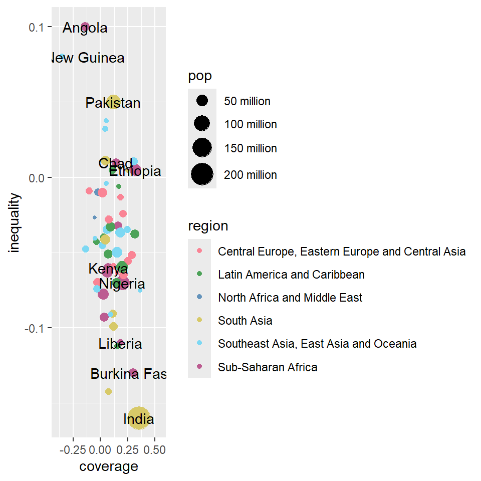
Refine the plot: labels and theme
code.R
my_pallete <- c(
"Central Europe, Eastern Europe and Central Asia" = "#fa8495",
"Latin America and Caribbean" = "#4ca258",
"North Africa and Middle East" = "#6493bb",
"South Asia" = "#d7c968",
"Southeast Asia, East Asia and Oceania" = "#7dd8f3",
"Sub-Saharan Africa" = "#bc5c91"
)
ggplot(data = df, mapping = aes(x = coverage, y = inequality)) +
geom_point(mapping = aes(size = pop, color = region)) +
geom_text(mapping = aes(label = country)) +
scale_color_manual(
name = "",
values = my_pallete,
guide = guide_legend(order = 2)
) +
scale_size_continuous(
name = "",
breaks = c(50, 100, 150, 200),
labels = c("50 million", "100 million", "150 million", "200 million"),
range = c(0, 8),
guide = guide_legend(order = 1)
) +
scale_x_continuous(
name = "Change in MCV1 coverage (2019-2000)",
breaks = c(-0.25, 0, 0.25, 0.5),
limits = c(-0.4, 0.55)
) +
scale_y_continuous(
name = "Change in absolute geographical inequality (2019-2000)",
breaks = c(-0.1, 0, 0.1),
limits = c(-0.16, 0.1)
) +
theme_classic() +
theme(
legend.position = "top",
legend.direction = "vertical",
legend.text = element_text(size = 11),
legend.key.height = unit(0.5, "cm"),
axis.text = element_text(size = 11)
)Warning: Removed 50 rows containing missing values or values outside the scale range
(`geom_text()`).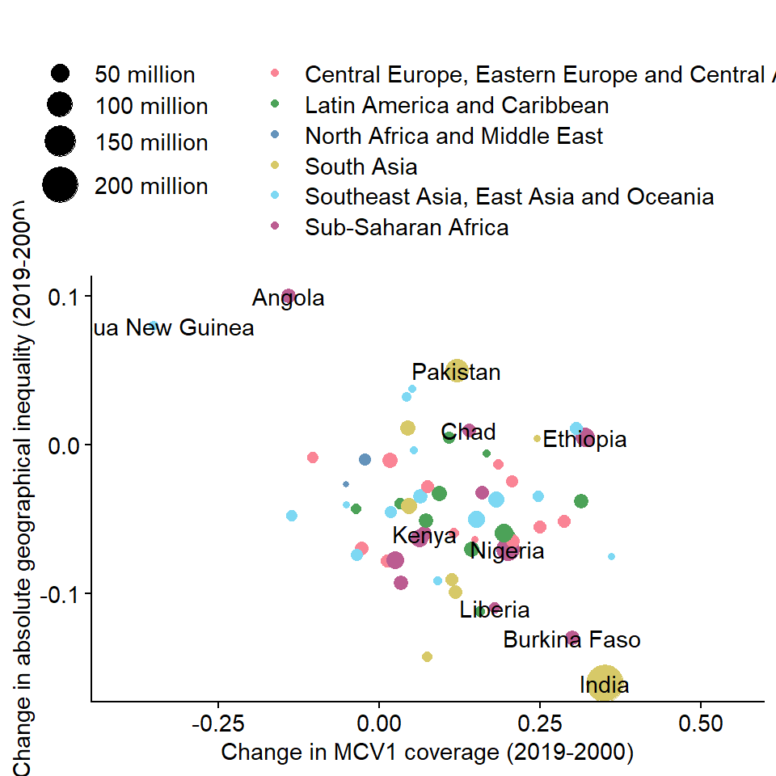
Refine the plot: minor tweaks
code.R
my_pallete <- c(
"Central Europe, Eastern Europe and Central Asia" = "#fa8495",
"Latin America and Caribbean" = "#4ca258",
"North Africa and Middle East" = "#6493bb",
"South Asia" = "#d7c968",
"Southeast Asia, East Asia and Oceania" = "#7dd8f3",
"Sub-Saharan Africa" = "#bc5c91"
)
ggplot(data = df, mapping = aes(x = coverage, y = inequality)) +
geom_point(mapping = aes(size = pop, color = region), alpha = 0.8) +
geom_text(mapping = aes(label = country), hjust = -0.2, vjust = 0.2) +
geom_vline(xintercept = 0, color = "#999999") +
geom_hline(yintercept = 0, color = "#999999") +
scale_color_manual(
name = "",
values = my_pallete,
guide = guide_legend(order = 2)
) +
scale_size_continuous(
name = "",
breaks = c(50, 100, 150, 200),
labels = c("50 million", "100 million", "150 million", "200 million"),
range = c(0, 8),
guide = guide_legend(order = 1)
) +
scale_x_continuous(
name = "Change in MCV1 coverage (2019-2000)",
breaks = c(-0.25, 0, 0.25, 0.5),
limits = c(-0.4, 0.55)
) +
scale_y_continuous(
name = "Change in absolute geographical inequality (2019-2000)",
breaks = c(-0.1, 0, 0.1),
limits = c(-0.16, 0.1)
) +
theme_classic() +
theme(
legend.position = "top",
legend.direction = "vertical",
legend.text = element_text(size = 11),
legend.key.height = unit(0.5, "cm"),
axis.text = element_text(size = 11)
)Warning: Removed 50 rows containing missing values or values outside the scale range
(`geom_text()`).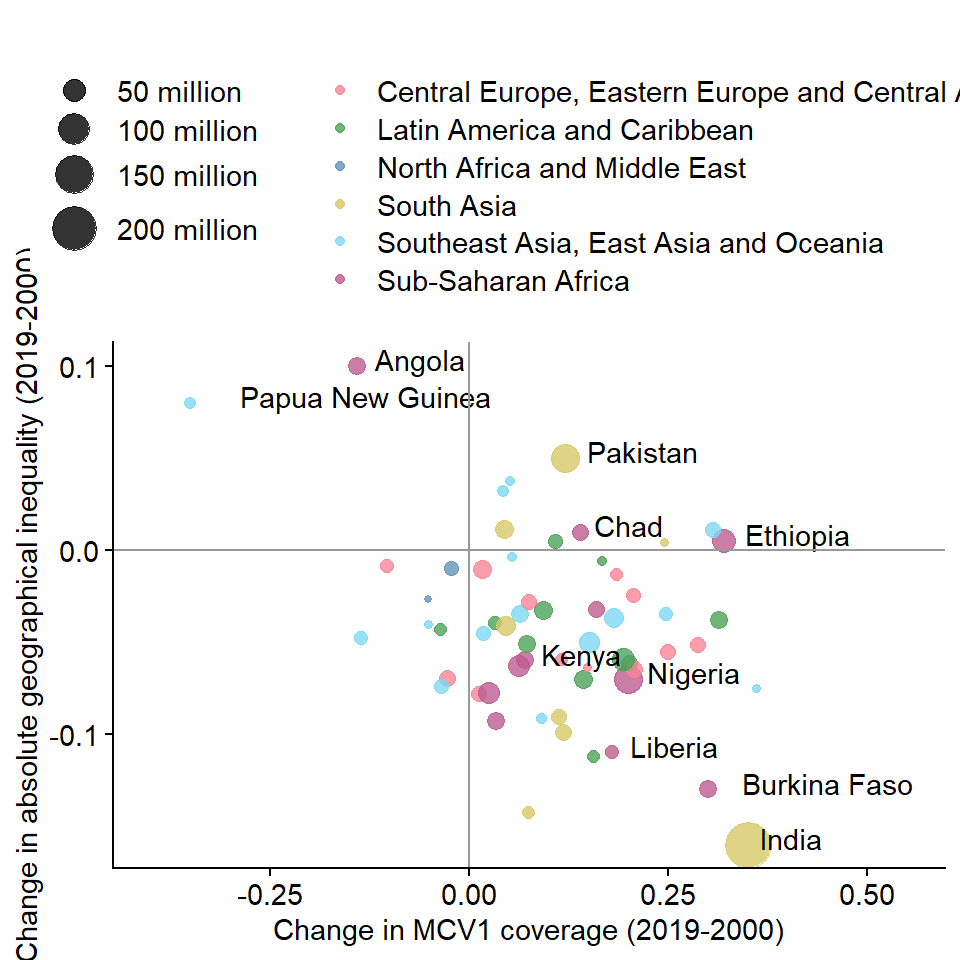
Refine the plot
Warning: Removed 50 rows containing missing values or values outside the scale range
(`geom_text()`).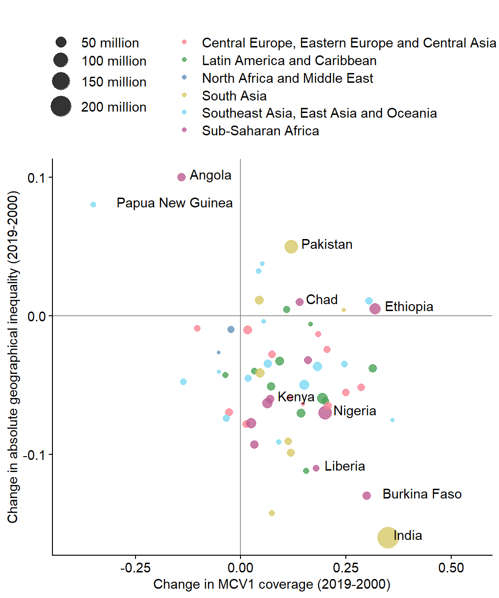
Some frequently used geom_*
Histogram and bar charts
| Geometric object | Description | Aesthetics |
|---|---|---|
geom_histogram() |
Divide continuous x into bins and count observations. |
Required: x, and bins or binwidth |
geom_col() |
Bar chart using provided x and y values. |
Required: x, y |
geom_bar() |
Bar chart with one axis computed using stat. |
Required: x or y, stat (default: "count") |
Some frequently used geom_*
Example: For the following examples, we will use the simulated_covid.rds dataset
simulated_covid <- readRDS("data/simulated_covid.rds")
head(simulated_covid) id case_name case_type sex age date_onset date_admission outcome
1 1 jCQH5RSlVq confirmed m 22 2023-01-01 <NA> recovered
2 2 AdCD3im7sn probable m 21 2023-01-08 <NA> recovered
3 3 iDzmfZhFkV probable m 21 2023-01-03 <NA> recovered
4 4 sKipHJsjZ2 probable m 10 2023-01-10 <NA> died
5 5 xG7GvAjlBf suspected m 24 2023-01-05 <NA> recovered
6 7 ZWWcBMLzoH confirmed m 10 2023-01-04 <NA> recovered
date_outcome date_first_contact date_last_contact district outbreak
1 <NA> <NA> <NA> Tan Binh 1st outbreak
2 <NA> 2022-12-31 2023-01-04 Tan Phu 1st outbreak
3 <NA> 2022-12-29 2023-01-05 Binh Tan 1st outbreak
4 2023-01-27 2023-01-10 2023-01-13 Quan 10 1st outbreak
5 <NA> 2023-01-07 2023-01-07 Quan 12 1st outbreak
6 <NA> 2023-01-06 2023-01-07 Binh Thanh 1st outbreakSome frequently used geom_*
Example: creating a bar chart for number of covid incidence over time
code.R
ggplot(
data = simulated_covid,
aes(x = date_onset)
) +
geom_bar(
color = "cornflowerblue"
) +
scale_x_date("Date") +
scale_y_continuous("Number of cases") +
ggtitle("New covid cases over time")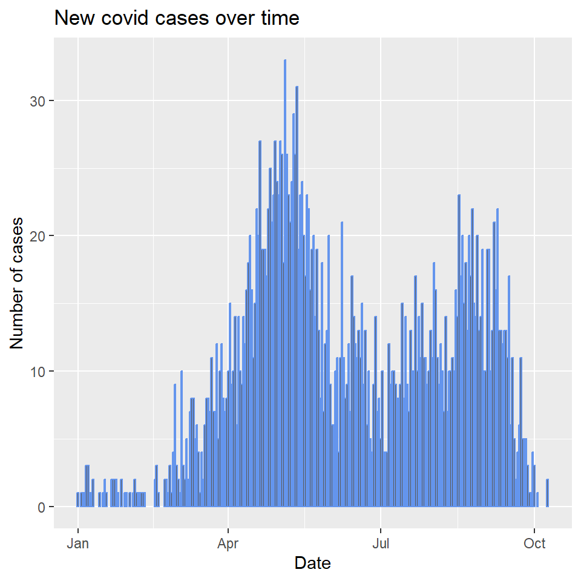
Some frequently used geom_*
Scatter plot
geom_* |
description | Parameters |
|---|---|---|
geom_point() |
Create a scatter plot from given x and y |
Required aesthetic: x and y |
Some frequently used geom_*
Example: creating a scatter plot for number of covid incidence over time
code.R
library(dplyr)
# we need to compute y
# (case_count before plotting)
aggregated_cases <- simulated_covid |>
group_by(date_onset) |>
summarise(
case_count = n()
)
ggplot(
aggregated_cases,
aes(x = date_onset, y = case_count)
) +
geom_point(
color = "cornflowerblue"
) +
scale_x_date("Date") +
scale_y_continuous("Number of cases") +
ggtitle("New covid cases over time")
Attaching package: 'dplyr'The following objects are masked from 'package:stats':
filter, lagThe following objects are masked from 'package:base':
intersect, setdiff, setequal, union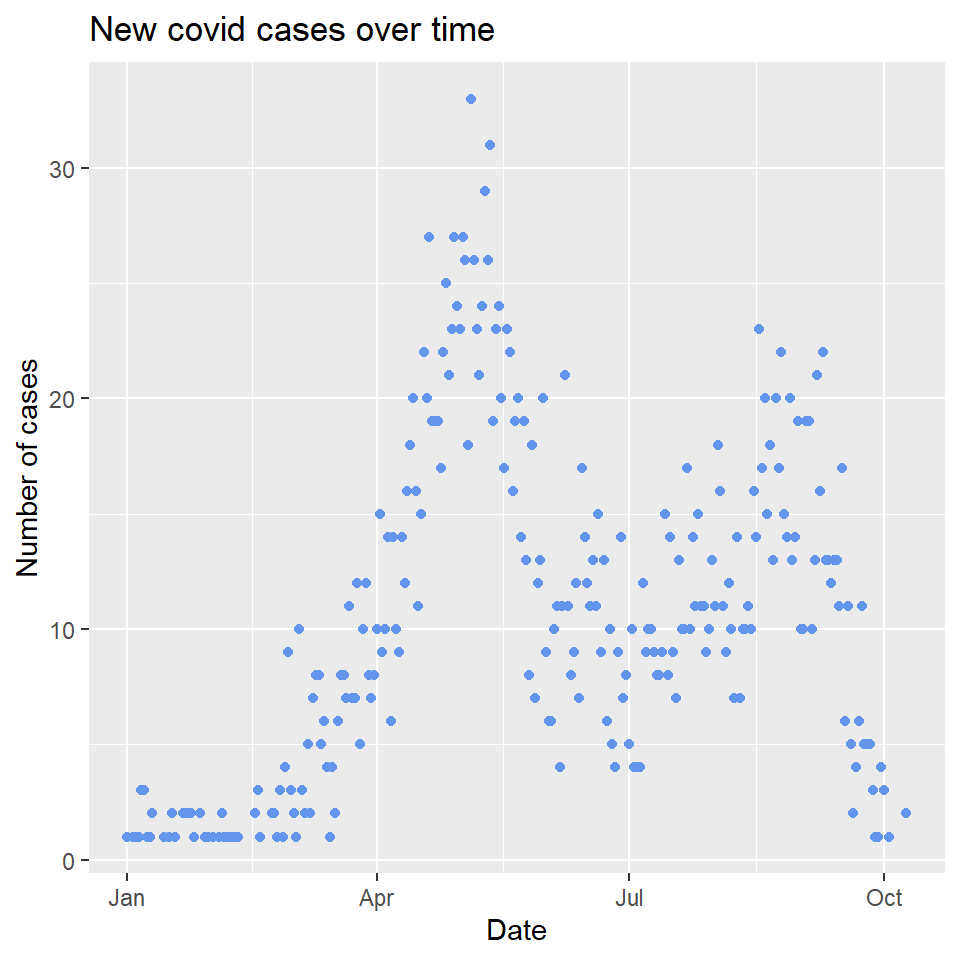
Some frequently used geom_*
Line chart
geom_* |
description | Parameters |
|---|---|---|
geom_line() |
Create a line plot from given x and y |
Required aesthetic: x and y |
geom_smooth() |
Create a regression line plot from x and y |
Required aesthetic:
|
Some frequently used geom_*
Example: creating a line chart for number of covid incidence over time
code.R
ggplot(
aggregated_cases,
aes(x = date_onset, y = case_count)
) +
geom_line(
color = "cornflowerblue"
) +
scale_x_date("Date") +
scale_y_continuous("Number of cases") +
ggtitle("New covid cases over time")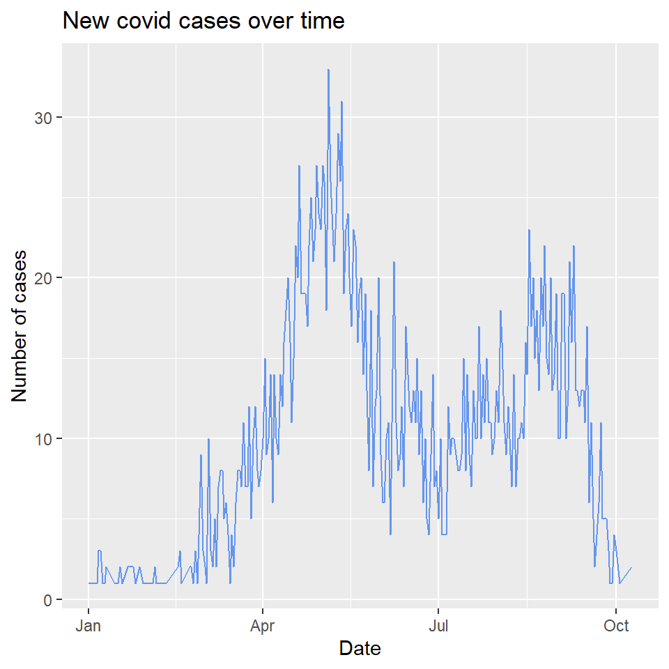
Some frequently used geom_*
Example: add a regression line for number of covid incidence over time
code.R
ggplot(
aggregated_cases,
aes(x = date_onset, y = case_count)
) +
geom_point(
color = "grey"
) +
geom_smooth(
color = "cornflowerblue",
# choose gam model to fit the data
method = "gam"
) +
scale_x_date("Date") +
scale_y_continuous("Number of cases") +
ggtitle("New covid cases over time")`geom_smooth()` using formula = 'y ~ s(x, bs = "cs")'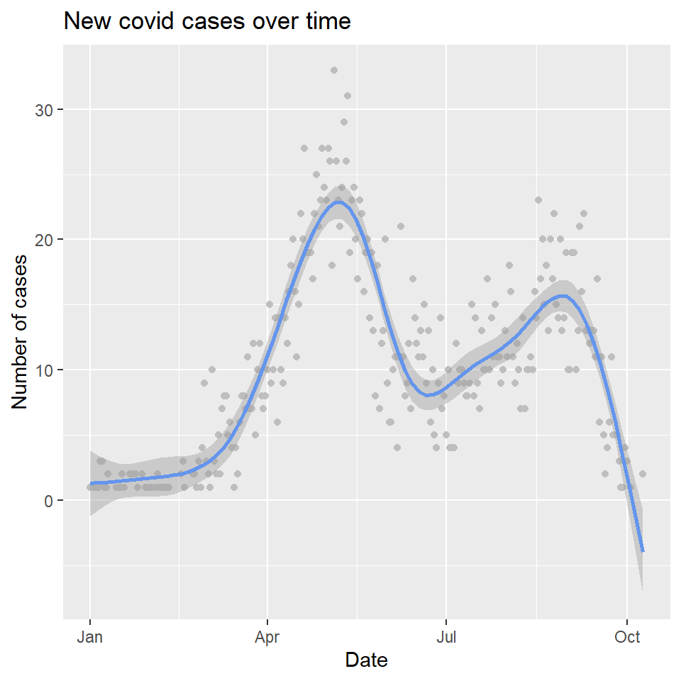
Some frequently used geom_*
Box plot
geom_* |
description | Parameters |
|---|---|---|
geom _boxplot() |
Create a boxplot from a continuous variable. If both |
Required aesthetic: x or y |
Some frequently used geom_*
Example: create a box plot to compare number of cases per day between 2 outbreaks
code.R
# compute cases per day for each outbreak
cases_per_outbreak <- simulated_covid |>
group_by(date_onset, outbreak) |>
summarise(
case_count = n()
)
ggplot(
cases_per_outbreak,
aes(x = case_count, y = outbreak)
) +
geom_boxplot() +
scale_x_continuous("Number of daily cases") +
scale_y_discrete("Outbreak") +
ggtitle("Compare distribution of daily cases between 2 outbreaks")`summarise()` has regrouped the output.
ℹ Summaries were computed grouped by date_onset and outbreak.
ℹ Output is grouped by date_onset.
ℹ Use `summarise(.groups = "drop_last")` to silence this message.
ℹ Use `summarise(.by = c(date_onset, outbreak))` for per-operation grouping
(`?dplyr::dplyr_by`) instead.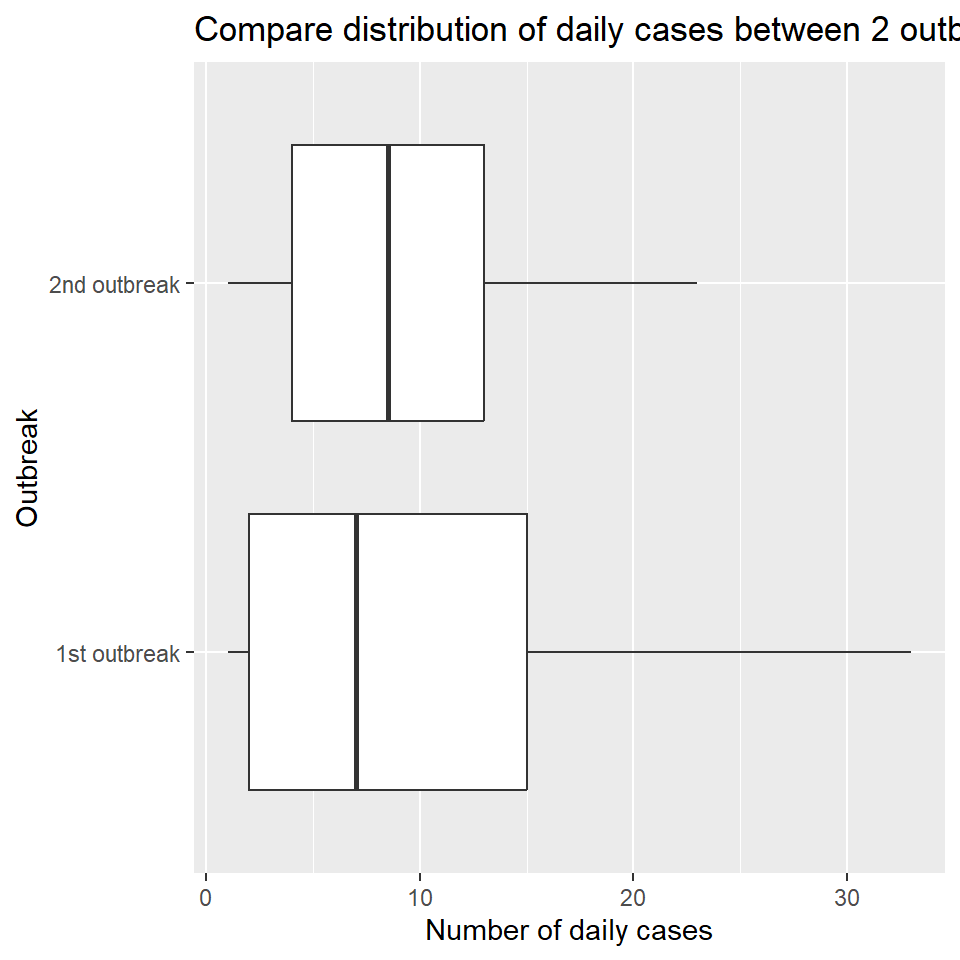
Where to find more geom_*?
For a complete list of geom_*, refer to ggplot2 official documentation
Alternatively, you can also look for the example code for your desired chart type at R Graph Gallery
Save plot
Function ggsave() is used for saving plots with the following key parameters
plotselect plot to save (default to the last generated plot)filenamename of the saved filepathpath to the directory where the plot is storedwidth,heightplot size in units expressed by theunitsargumentdpiplot resolution
Save plot
Example: save the last generated plot
ggsave(
path = "plots", # save plot under plots directory
filename = "new_plot.png",
width = 800,
height = 600, # adjust plot size in pixel
units = "px",
dpi = 200 # set resolution
)Export: two types of formats
- Vector format (e.g.
.pdf,.svg,.eps)- Consists of independent geometric objects (segments, polygons, curves, etc.)
- Can be enlarged without losing resolution
- Raster format (e.g.
.png,.jpeg/.jpg,.tiff).- Rectangular grid of pixels, possibly with color
- Will be very blurry if image is enlarged while resolution is low
Main components of a graph (R)
Mapping from data to aesthetic attributes of geometric objects
Geometic objects: what you see on the plot (points, lines, bars)
Aesthetic attributes: “role” of variables in plot: location (often along x-axis and y-axis), colour, size, shape
Scales: map data values to aesthetic attributes
Coordinate system: cartesian, polar, map projections.
Networks, trees have no coordinate system
- Not about:
- graph type (\(\approx\) language, words)
- font size, background colour … Some of these are specified in a theme
Polar coordinate system
Pie chart WHO European Health Report 2009

Geometric object? Aesthetic attributes? Transformation? Coordinate system?
Advance ggplot2
Overview
- What does
mapping = aes()do? - Inheritance of data and aesthetics
- The
annotate()layer - Splitting up with
facet_wrap() - Extending
ggplot2 - Interactive plots with
plotly
What does mapping = aes() do?
ggplot()arguments and default values:
ggplot(data = NULL, mapping = aes(), ...)geom_*()arguments and default values:
geom_bar(mapping = NULL, data = NULL, ...)
geom_boxplot(mapping = NULL, data = NULL, ...)
geom_point(mapping = NULL, data = NULL, ...)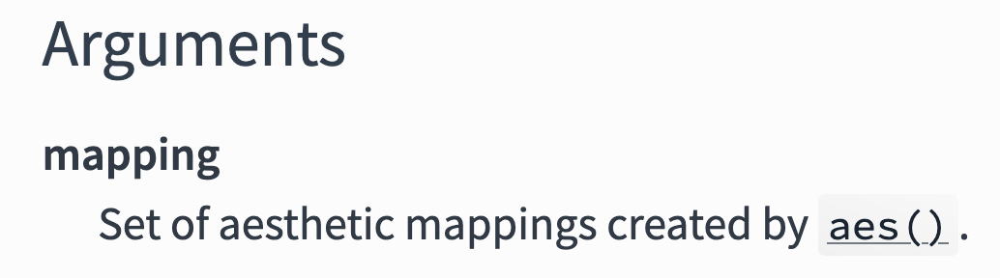
What does mapping = aes() do?
Recall this:
df <- read_excel("data/nature_plot.xlsx")
head(df)# A tibble: 6 × 5
country coverage inequality pop region
<chr> <dbl> <dbl> <dbl> <chr>
1 Angola -0.14 0.1 30.2 Sub-Saharan Africa
2 Papua New Guinea -0.35 0.08 16.5 Southeast Asia, East Asia and Ocea…
3 Pakistan 0.12 0.05 82.5 South Asia
4 Chad 0.14 0.01 27.5 Sub-Saharan Africa
5 Ethiopia 0.32 0.005 55 Sub-Saharan Africa
6 Kenya 0.07 -0.06 30.2 Sub-Saharan Africa label (country) |
x (coverage) |
y (inequality) |
size (population) |
color (region) |
|---|---|---|---|---|
| Nigeria | 0.20 | -0.07 | 220M | Sub-Saharan Africa |
What does mapping = aes() do?
Idea: we are mapping the variables in the data to the aesthetics of a geometry
aes(x = coverage, y = inequality)
#> Aesthetic mapping:
#> * `x` -> `coverage`
#> * `y` -> `inequality`aes(x = coverage^2, y = inequality/2)
#> Aesthetic mapping:
#> * `x` -> `coverage^2`
#> * `y` -> `inequality/2`What does mapping = aes() do?
How do we know which aesthetics does each geometry support? Read the documentation!
Simply:
- Read the documentation of the geometry of interest
- Click Aesthetics on the navigation bar on the right (or scroll down)
- All aesthetics compatible for the geometry are listed
Inheritance of data and aesthetics
Recall this:
ggplot()arguments and default values:
ggplot(data = NULL, mapping = aes(), ...)geom_*()arguments and default values:
geom_bar(mapping = NULL, data = NULL, ...)
geom_boxplot(mapping = NULL, data = NULL, ...)
geom_point(mapping = NULL, data = NULL, ...)Inheritance of data and aesthetics
The idea is that:
ggplot()can control the dataset and aestheticsgeom_*()s can also control the type of geometries, and allow customisation of aesthetics
Inheritance of data and aesthetics
A typical ggplot plot will look something like:
ggplot(plot_df, aes(x = date, y = count)) +
geom_line() +
geom_point()Implicitly, you can think of this as:
ggplot() +
geom_line(mapping = aes(x = date, y = count), data = plot_df) +
geom_line(mapping = aes(x = date, y = count), data = plot_df)
Note
- We call this inheritance
- Data and aesthetics are inherited top-down
Inheritance of data and aesthetics
You have seen this in action before!
my_pallete <- c(
"Central Europe, Eastern Europe and Central Asia" = "#fa8495",
"Latin America and Caribbean" = "#4ca258",
"North Africa and Middle East" = "#6493bb",
"South Asia" = "#d7c968",
"Southeast Asia, East Asia and Oceania" = "#7dd8f3",
"Sub-Saharan Africa" = "#bc5c91"
)
ggplot(df, aes(x = coverage, y = inequality)) +
geom_point(aes(size = pop, color = region, alpha = 0.8)) +
geom_text(aes(label = country), hjust = -0.2, vjust = 0.2) +
geom_vline(xintercept = 0, color = "#999999") +
geom_hline(yintercept = 0, color = "#999999") +
scale_x_continuous(breaks = c(-0.25, 0, 0.25, 0.5),
limits = c(-0.4, 0.55)) +
scale_y_continuous(breaks = c(-0.1, 0, 0.1), limits = c(-0.16, 0.1)) +
scale_size_continuous(
breaks = c(50, 100, 150, 200),
labels = c("50 million", "100 million", "150 million", "200 million"),
range = c(0, 8),
guide = guide_legend(order = 1)
) +
scale_color_manual(
values = my_pallete,
guide = guide_legend(order = 2)
) +
labs(x = "Change in MCV1 coverage (2019-2000)",
y = "Change in absolute geographical inequality (2019-2000)",
size = NULL,
color = NULL) +
theme_classic() +
theme(
legend.position = "top",
legend.direction = "vertical",
legend.text = element_text(size = 11),
legend.key.height = unit(0.5, "cm"),
axis.text = element_text(size = 11)
)Inheritance of data and aesthetics
ggplot(df, aes(x = coverage, y = inequality)) +
geom_point(aes(size = pop, color = region), alpha = 0.8) +
geom_text(aes(label = country), hjust = -0.2, vjust = 0.2) Warning: Removed 50 rows containing missing values or values outside the scale range
(`geom_text()`).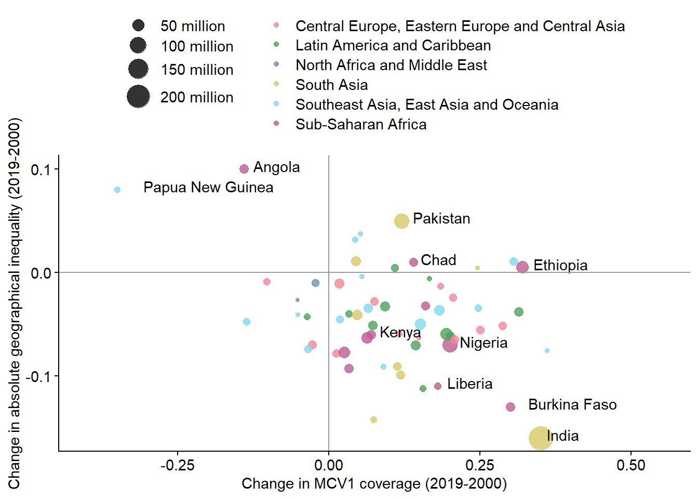
Inside and outside aes()
What happens if we do it like this:
ggplot(df, aes(x = coverage, y = inequality)) +
geom_point(aes(size = pop, color = region, alpha = 0.8)) +
geom_text(aes(label = country, hjust = -0.2, vjust = 0.2)) Warning: Removed 50 rows containing missing values or values outside the scale range
(`geom_text()`).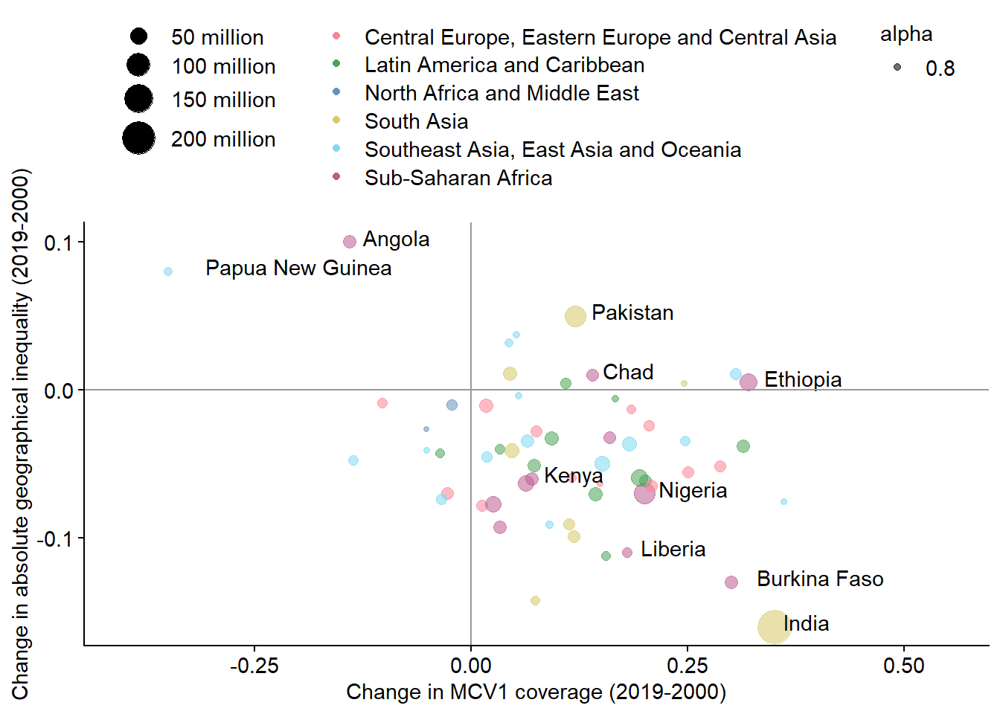
Inside and outside aes()
Back to this slide (again):
label (country) |
x (coverage) |
y (inequality) |
size (population) |
color (region) |
|---|---|---|---|---|
| Nigeria | 0.20 | -0.07 | 220M | Sub-Saharan Africa |
df <- read_excel("data/nature_plot.xlsx")
head(df)# A tibble: 6 × 5
country coverage inequality pop region
<chr> <dbl> <dbl> <dbl> <chr>
1 Angola -0.14 0.1 30.2 Sub-Saharan Africa
2 Papua New Guinea -0.35 0.08 16.5 Southeast Asia, East Asia and Ocea…
3 Pakistan 0.12 0.05 82.5 South Asia
4 Chad 0.14 0.01 27.5 Sub-Saharan Africa
5 Ethiopia 0.32 0.005 55 Sub-Saharan Africa
6 Kenya 0.07 -0.06 30.2 Sub-Saharan Africa Inside and outside aes()
Important
In short:
- You want the aesthetics to change with the data -> put it inside
aes()* - You want the aesthetics to be fixed regardless of data -> put it outside
aes()* - The aesthetics must be supported by the geometry
- This also means that columns names can only be used inside
aes()
Color transparency
In ggplot2, you can add transparency to colors with the alpha aesthetics (available for most geometries)
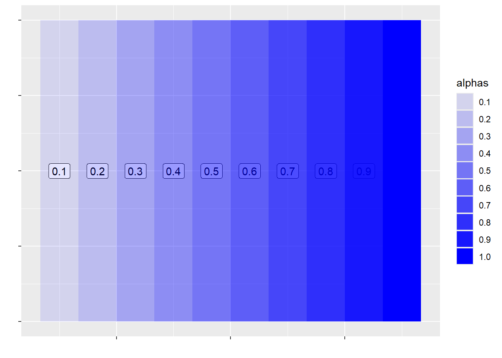
The annotate() layer
What if we want to annotate specific parts of a figure?
ggplot(aggregated_cases, aes(x = date_onset, y = case_count)) +
geom_point(color = "grey") +
geom_smooth(color = "cornflowerblue", method = "gam") +
labs(
title = "New covid cases over time",
x = "Date",
y = "Number of cases"
)`geom_smooth()` using formula = 'y ~ s(x, bs = "cs")'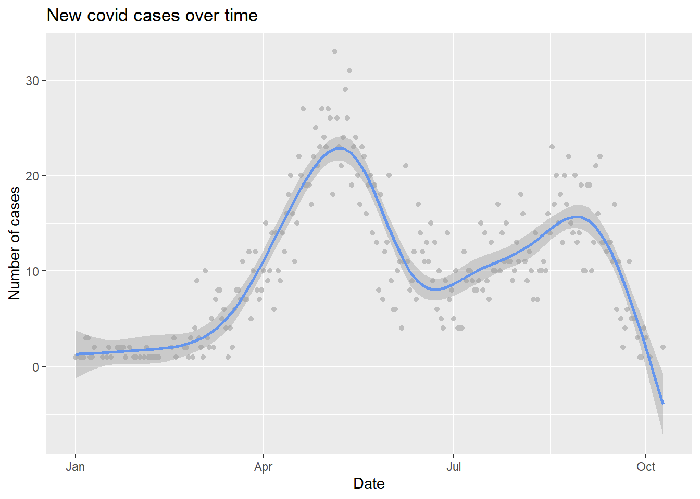
The annotate() layer
Adding a vertical line with geom_vline() and a label with geom_label()
ggplot(aggregated_cases, aes(x = date_onset, y = case_count)) +
# main plotting geoms
geom_point(color = "grey") +
geom_smooth(color = "cornflowerblue", method = "gam") +
# figure annotation geoms (2)
geom_vline(xintercept = as.Date("2023-03-01"), linetype = 2) +
geom_label(label = "Start of outbreak", x = as.Date("2023-03-01"), y = 30) +
# labels
labs(
title = "New covid cases over time",
x = "Date",
y = "Number of cases"
)`geom_smooth()` using formula = 'y ~ s(x, bs = "cs")'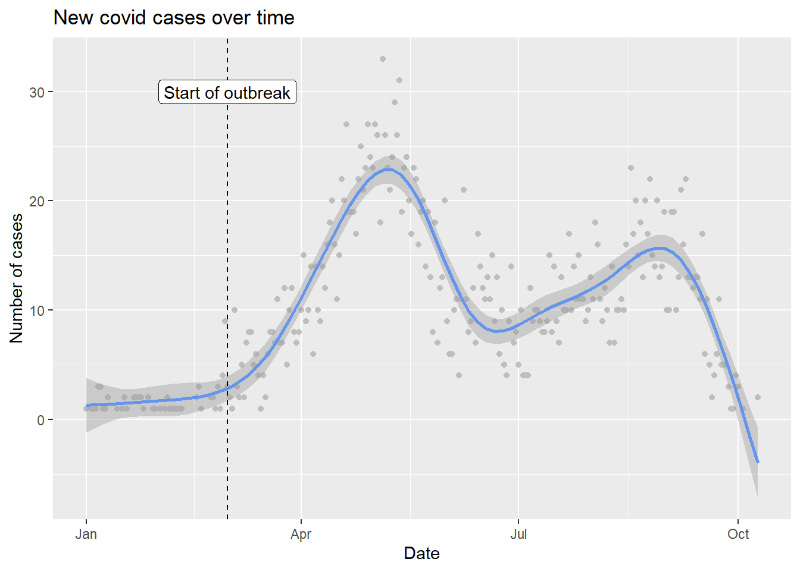
The annotate() layer
Adding a region with geom_rect() and a label with geom_label()
ggplot(aggregated_cases, aes(x = date_onset, y = case_count)) +
# figure annotation geoms (1)
geom_rect(
ymin = -Inf,
ymax = Inf,
xmin = as.Date("2023-04-01"),
xmax = as.Date("2023-06-01"),
alpha = 0.2,
fill = "red"
) +
geom_label(
label = "Outbreak peak",
x = as.Date("2023-06-25"),
y = 30,
color = "red"
) +
# main plotting geoms
geom_point(color = "grey") +
geom_smooth(color = "cornflowerblue", method = "gam") +
# labels
labs(
title = "New covid cases over time",
x = "Date",
y = "Number of cases"
)`geom_smooth()` using formula = 'y ~ s(x, bs = "cs")'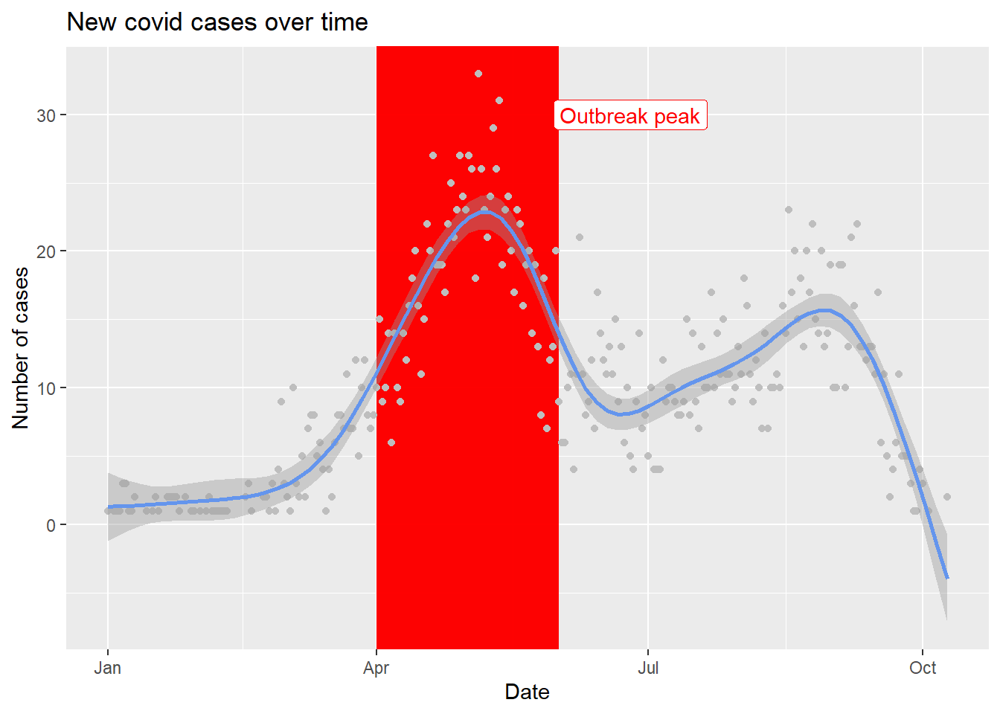
The annotate() layer
`geom_smooth()` using formula = 'y ~ s(x, bs = "cs")'
We already said alpha = 0.2 outside of aes(), why doesn’t it have any transparency at all??
The annotate() layer
- I lied
- Aesthetics are always dependant on the dataset, whether it is outside or inside
aes()
The annotate() layer
Example:
- Originally the dataset when used in
ggplot()looks like this:
ggplot(aggregated_cases, ...) + ...# A tibble: 257 × 2
date_onset case_count
<date> <int>
1 2023-01-01 1
2 2023-01-03 1
3 2023-01-04 1
4 2023-01-05 1
5 2023-01-06 3
6 2023-01-07 3
7 2023-01-08 1
8 2023-01-09 1
9 2023-01-10 2
10 2023-01-14 1
# ℹ 247 more rows- When you assigned a fixed value to an aesthetic outside of
aes(), it might look like this:
ggplot(aggregated_cases, ...) + geom_...(alpha = 0.2)# A tibble: 257 × 3
date_onset case_count alpha
<date> <int> <dbl>
1 2023-01-01 1 0.2
2 2023-01-03 1 0.2
3 2023-01-04 1 0.2
4 2023-01-05 1 0.2
5 2023-01-06 3 0.2
6 2023-01-07 3 0.2
7 2023-01-08 1 0.2
8 2023-01-09 1 0.2
9 2023-01-10 2 0.2
10 2023-01-14 1 0.2
# ℹ 247 more rowsThe annotate() layer
Using the annotate() layer, you can separate the annotations from the geometry layer
ggplot(aggregated_cases, aes(x = date_onset, y = case_count)) +
# figure annotation geoms (1)
annotate(
"rect",
ymin = -Inf,
ymax = Inf,
xmin = as.Date("2023-04-01"),
xmax = as.Date("2023-06-01"),
alpha = 0.2,
fill = "red"
) +
annotate(
"label",
label = "Outbreak peak",
x = as.Date("2023-06-25"),
y = 30,
color = "red"
) +
# main plotting geoms
geom_point(color = "grey") +
geom_smooth(color = "cornflowerblue", method = "gam") +
# labels
labs(
title = "New covid cases over time",
x = "Date",
y = "Number of cases"
)`geom_smooth()` using formula = 'y ~ s(x, bs = "cs")'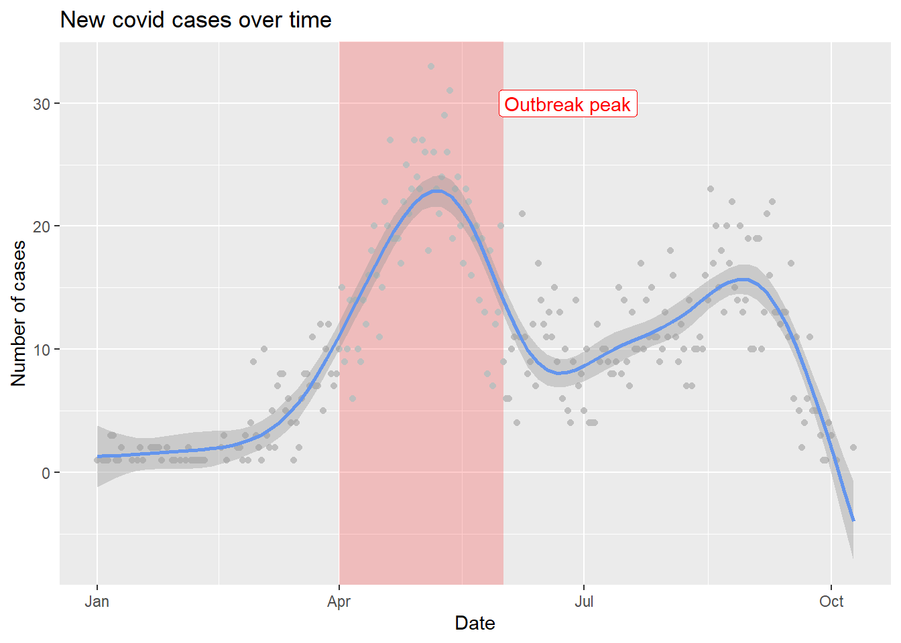
The annotate() layer
Comparing:
geom_rect(
ymin = -Inf, ymax = Inf,
xmin = as.Date("2023-04-01"), xmax = as.Date("2023-06-01"),
alpha = 0.2, fill = "red"
) +
geom_label(label = "Outbreak peak", x = as.Date("2023-06-25"), y = 30, color = "red")vs.
annotate("rect",
ymin = -Inf, ymax = Inf,
xmin = as.Date("2023-04-01"), xmax = as.Date("2023-06-01"),
alpha = 0.2, fill = "red"
) +
annotate("label", label = "Outbreak peak", x = as.Date("2023-06-25"), y = 30, color = "red") +The annotate() layer
Important
In short:
- You can create plot annotations with
geom_label(),geom_rect(),geom_abline(), etc. (look atggplot2website) - If it’s not working correctly (looks blurry, result not as expected), use
annotate()instead; very easy to switch fromgeom_*()toannotate()
Splitting up with facet_wrap()
- What if you want to split the plot into different panels for each group?
- Have a look at your data, find a “grouping” variable to split the data
Splitting up with facet_wrap()
- For example: Split our
simulated_covidbyoutbreak
ggplot(data = simulated_covid, aes(x = date_onset)) +
geom_bar(fill = "cornflowerblue") +
facet_wrap(~outbreak)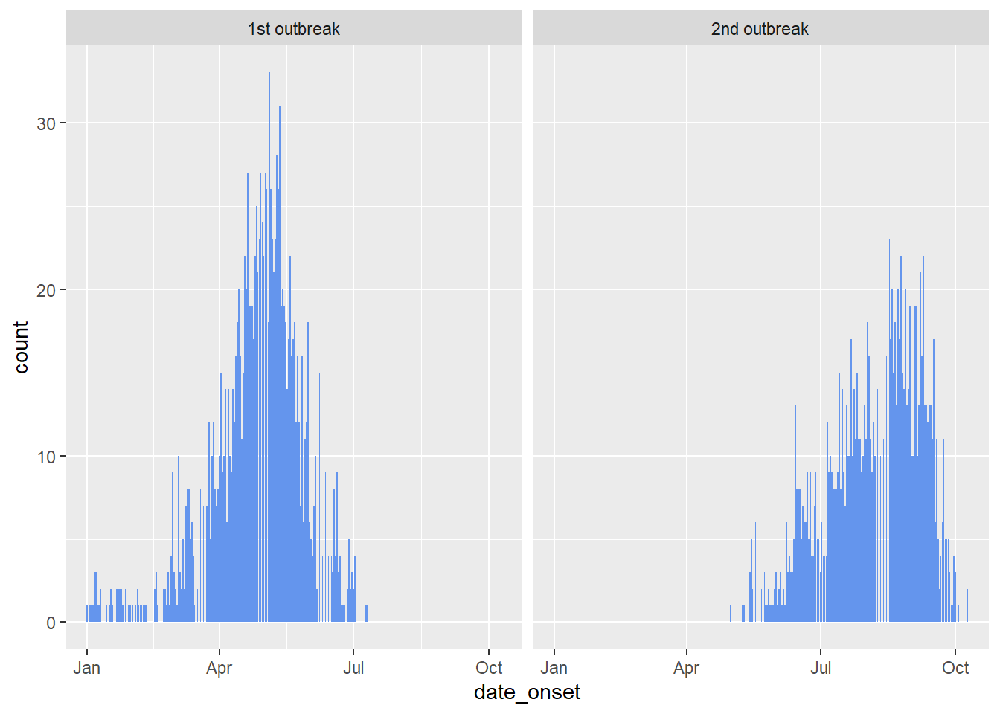
Splitting up with facet_wrap()
- Use
facet_wrap()and add in the variable (with a~in the front)
ggplot(data = simulated_covid, aes(x = date_onset)) +
geom_bar(fill = "cornflowerblue") +
facet_wrap(~outbreak)
Splitting up with facet_wrap()
- You can “free” the scales from their original limits
ggplot(data = simulated_covid, aes(x = date_onset)) +
geom_bar(fill = "cornflowerblue") +
facet_wrap(~outbreak, scales = "free_x")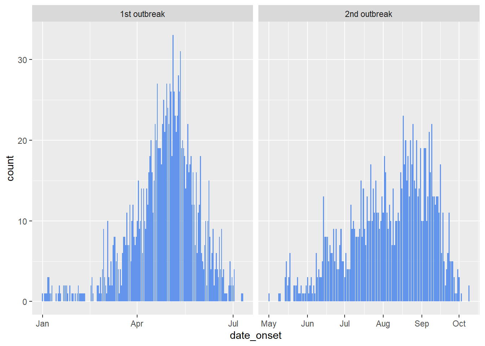
Splitting up with facet_wrap()
- You can “free” the scales from their original limits
ggplot(data = simulated_covid, aes(x = date_onset)) +
geom_bar(fill = "cornflowerblue") +
facet_wrap(~outbreak, scales = "free_y")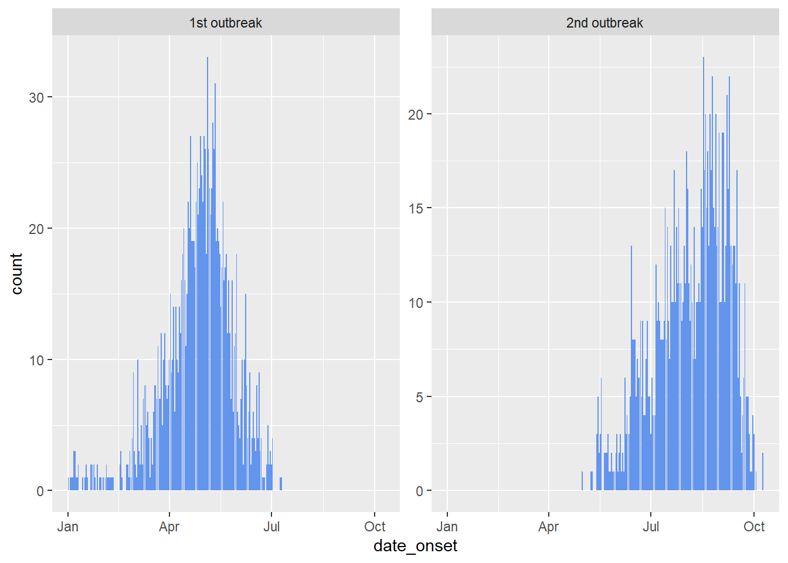
Extending ggplot2
- Add specific functionalities to
ggplot2with extensions! - How to use:
- Think of a specific figure you want to plot
- Try your best to plot it with
ggplot2 - If you think
ggplot2cannot do what you want. Have a look here - Read their documentation to see how to use them
Extending ggplot2
Some commonly used extensions:
patchwork: to patch multipleggplot2plots togethergganimate: to create moving/animating plotsggrepel: to repel labels on a plot away from each otherggdist: to work with distributions
Interactive plots with plotly
- If you need to create interactive
ggplots, you can use theplotlypackage - You just need to save your
ggplotinto an object
p <- ggplot(aggregated_cases, aes(x = date_onset, y = case_count)) +
geom_point(color = "grey") +
geom_smooth(color = "cornflowerblue", method = "gam") +
labs(
title = "New covid cases over time",
x = "Date",
y = "Number of cases"
)Interactive plots with plotly
- Then use it in the
plotly::ggplotly()function
# install.packages("plotly")
library(plotly)
Attaching package: 'plotly'The following object is masked from 'package:ggplot2':
last_plotThe following object is masked from 'package:stats':
filterThe following object is masked from 'package:graphics':
layoutggplotly(p)`geom_smooth()` using formula = 'y ~ s(x, bs = "cs")'Interactive plots with plotly
- You can also create 3d plots with
plotly
plot_ly(
data = tibble(x = rnorm(10), y = rnorm(10), z = rnorm(10)),
x = ~x,
y = ~y,
z = ~z
)No trace type specified:
Based on info supplied, a 'scatter3d' trace seems appropriate.
Read more about this trace type -> https://plotly.com/r/reference/#scatter3dNo scatter3d mode specifed:
Setting the mode to markers
Read more about this attribute -> https://plotly.com/r/reference/#scatter-mode